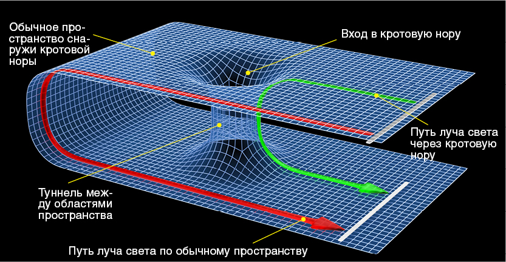
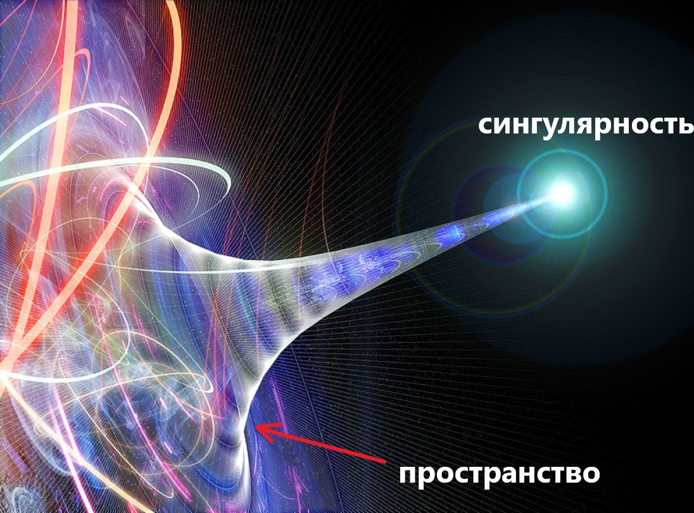

Гравитационная сингулярность (иногда сингулярность пространства-времени) — точка (или подмножество) в пространстве-времени, через которую невозможно гладко продолжить входящую в неё геодезическую линию. В таких областях становится неприменимым базовое приближение большинства физических теорий, в которых пространство-время рассматривается как гладкое многообразие без края. Часто в гравитационной сингулярности величины, описывающие гравитационное поле, становятся бесконечными или неопределёнными. К таким величинам относятся, например, скалярная кривизна или плотность энергии в сопутствующей системе отсчёта.
В рамках классической общей теории относительности сингулярности обязательно возникают при формировании чёрных дыр под горизонтом событий, в таком случае они ненаблюдаемы извне. В некоторых случаях сингулярности могут быть видны внешнему наблюдателю — так называемые голые сингулярности, например, космологическая сингулярность в теории Большого взрыва.
С математической точки зрения гравитационная сингулярность является множеством особых точек решения уравнений Эйнштейна. Однако при этом необходимо строго отличать так называемую «координатную сингулярность» от истинной гравитационной. Координатные сингулярности возникают тогда, когда принятые для решения уравнений Эйнштейна координатные условия оказываются неудачными, так что, например, сами принятые координаты становятся многозначными (координатные линии пересекаются) или, наоборот, не покрывают всего многообразия (координатные линии расходятся и между ними оказываются не покрываемые ими «клинья»). Такие сингулярности могут быть устранены принятием других координатных условий, то есть преобразованием координат. Примером координатной сингулярности служит сфера Шварцшильда r=2r(s) в пространстве-времени Шварцшильда в шварцшильдовских координатах, где компоненты метрического тензора обращаются в бесконечность. Истинные гравитационные сингулярности никакими преобразованиями координат устранить нельзя, и примером такой сингулярности служит многообразие r=0 в том же решении.
Сингулярности не наблюдаются непосредственно и являются при нынешнем уровне развития физики лишь теоретическим построением. Считается, что описание пространства-времени вблизи сингулярности должна давать квантовая гравитация.